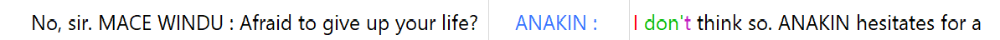

Comparing the Star Wars Saga
For my corpus analysis I chose the scripts of the Star Wars movies. I knew that each movie had a different director and writer, so I wanted to see if I could find any patterns in the scripts. I am going to break up the corpuses into the first 4 movies and the last 3 movies.
What scripts did I use for the corpus and how did I obtain them?
I am using the scripts from the first 7 Star Wars movies. I obtained them from The Internet Movie Script Database (IMSDb). I copied and pasted the scripts into a text file.
From young Padawan to Sith Lord: Analyzing Anakin Skywalker's Growth through out the Star Wars Saga.
I began my analysis on specific character's and their growth through the movies. My first character I focused on was Anakin Skywalker.

In Episode 1, Throughout the film, Anakin's dialogue and actions showcase his kind-hearted nature, his desire to help others, and his longing for freedom. He forms a close bond with Padmé Amidala, the young queen of Naboo, and expresses his dream of becoming a Jedi to free slaves like himself. Anakin's innocence and inherent goodness are contrasted with subtle hints of his future turn to the dark side. His fear of losing his mother, his anger towards those who threaten his loved ones, and his quick attachment to Padmé all lay the groundwork for his eventual fall.
Here are a few examples of Anakin's issues with attachment that are the building blocks for his eventual turn to the dark side.
In Episode 2, Anakin's dialogue portrays him as a confident, yet impulsive Padawan. He often expresses his frustrations with Obi-Wan's mentorship and his desire to prove himself. For example, when Obi-Wan tells him, "You will be a Jedi. I promise," Anakin responds, "I am a slow learner." This exchange highlights Anakin's impatience and his struggle to find his place within the Jedi Order.
This is a WordCloud of the most used words throughout episode 1-4. It is quite evident that Anakin was the most used in episode 1-3, and you can see Luke creep up for episode 4.

In Episode 3, Anakin's dialogue shifts to reflect his growth as a Jedi Knight and his internal conflicts. He grapples with his loyalty to the Jedi and his growing mistrust of the Council. This is evident when he says, "I'm not the Jedi I should be. I want more, and I know I shouldn't." His conversations with Padmé also reveal his deep-seated fear of losing her, foreshadowing his eventual turn to the dark side.
By Episode 4, Anakin has fully transformed into Darth Vader. His dialogue is marked by a cold, authoritative tone, reflecting his position as the Emperor's enforcer. When addressing Princess Leia, he threatens, "I want to know what happened to the plans they sent you." This stark contrast to his earlier dialogue showcases his complete embrace of the dark side.
Episodes Five and Onwards!
The next analysis I did was from episode 5-7. I wanted to get the newer movies aswell, however their scripts haven't been made avaliable as of April 2024.
Now, I didn't have a clue on what to analyze for these three scripts since episode 5 and 6 were written in the 1980s while episode 7 was written in the 2010s. So not only time period changed, but also parent companies that helped make the movies. So I decided to do a simple word count analysis to see if there were any differences in the scripts. I did how many times a character was mentioned in the script:
- The Empire Stikes Back
- Luke: 290
- Han: 199
- Yoda: 88
- Leia: 87
- Vader: 85
- Total: 749
- Return of the Jedi
- Luke: 218
- Han: 94
- Leia: 73
- Vader: 70
- Emperor Palpatine: 27
- Yoda: 8
- Total: 490
- The Force Awakens
- Rey: 113
- Finn: 89
- Han: 77
- Kylo Ren/Ben: 60
- Leia: 24
- Luke: 22
- Snoke: 10
- Total: 395
- üïµÔ∏è‚Äç‚ôÇÔ∏è Observations:
- Luke remains a central character in Empire and Jedi, but takes a more peripheral role in The Force Awakens, mirroring his absence for most of the film.
- Han's mentions decrease from Empire to Jedi and then further in The Force Awakens, possibly reflecting his diminished role as the focus shifts to new characters.
- Leia's mentions decline slightly across the three films, with a notable decrease in The Force Awakens as the story focuses more on Rey and Finn, and perhaps her real life
- Vader maintains a significant presence in Empire and Jedi, while his grandson Kylo Ren takes on the antagonist role in The Force Awakens with the second highest number of mentions.
- New protagonists Rey and Finn are heavily featured in The Force Awakens, receiving the most and third-most mentions respectively as the narrative spotlight shifts to them.
- The Emperor emerges as a key character in Jedi, while Supreme Leader Snoke is introduced in The Force Awakens in a similar leadership role.
N-Gram Analysis
Just a random ngram between the seven scripts which I thought looked cool.